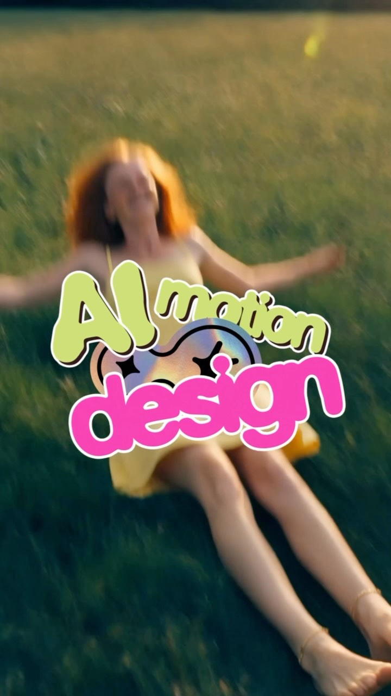

Facebook｜HeyGen Digital Twin + HyperFrames：AI Avatar 與 motion design 內容產線

一句話摘要
HeyGen 把 Digital Twin 口播與 HyperFrames 動態設計包成一條內容產線：真人不用每次拍攝，AI Avatar 負責出鏡與台詞，HyperFrames 負責讓畫面看起來像有剪輯師加過 motion design。
為什麼保存
這則影片與欒帥近期保存的 HeyGen for Real Estate、HyperFrames、Codex + 影片工作流等內容互相呼應。它展示 AI 影片工具的下一步不是單點生成，而是把「出鏡、口播、動效、排程發佈」整合成可重複使用的創作者產線。
對 AI 學習雷達來說，這是觀察 AI Avatar 從 demo 走向日常內容工作流的重要案例。
Facebook 影片可見資訊
- 作者：HeyGen（已驗證帳號）
- 影片長度：40 秒
- 可見觀看數：1.1 萬次觀看
- 可見心情數：104
- 發布時間：22 小時前
- 主題標籤：`#heygenpartner`、`#digitaltwin`、`#aiavatar`
貼文主張：
> Comment “TWIN” to get the HyperFrames system。
作者表示自己已經好幾週沒拍片，但沒有人注意到，因為 digital twin 會交付每一句台詞，而 HyperFrames 會用過去需要付費請剪輯師做的 motion design 包裝影片。
影片縮圖觀察
縮圖中可見：
- 一名女性躺在草地上，畫面帶有動態模糊與復古色調。
- 前景有大型貼紙文字：`AI motion design`。
- 視覺重點是把普通人物影像加上鮮明字卡與圖形設計，呈現「AI 幫影片加動態設計」的概念。
產品敘事拆解
HeyGen 這則貼文的商業敘事很明確：
- **痛點**：拍攝日成本高，包括燈光、重拍、狀態檢查、上鏡壓力。
- **替代方案**：建立一個 digital twin，讓你的臉和聲音按排程出現。
- **包裝層**：HyperFrames 為畫面加上 motion design，不只是乾巴巴的 AI Avatar 口播。
- **結果**：創作者可以更穩定地發內容，不必每次親自拍攝。
對創作者工作流的意義
這種工作流最適合高頻、格式化、可腳本化的內容：
- 教學短影片
- 產品更新
- 社群短口播
- 個人品牌觀點
- 課程宣傳與片段重製
- 多語言／多平台版本化內容
真人仍然重要，但真人的角色會逐漸從「每次都要親自拍」變成「定義人設、審稿、錄製原始素材、把關品質」。
對 Hermes / AI 學習雷達的啟發
這則影片可以接到幾條已保存的觀察線：
- HeyGen for Real Estate：把 AI Avatar 垂直產品化。
- HyperFrames：用 HTML / agent skills / CLI 做可重現影片渲染。
- Codex + HyperFrames：讓 coding agent 產生影片結構與動畫。
- social-post skill：把內容排程、發布與成效學習做成 skill。
若把這些串起來，就會形成一條完整 pipeline：
```text
知識庫／素材 → 腳本 → Digital Twin 口播 → HyperFrames 動效 → 平台化文案 → 發布 → 成效回收 → 下一輪內容優化
```
這正是 agentic content production 的雛形。
風險與限制
- Digital Twin 涉及肖像、聲音與授權，必須明確取得本人同意並保護素材。
- AI Avatar 若過度使用，可能降低真實感或造成內容同質化。
- HyperFrames / motion design 能提升包裝，但不能取代內容本身的洞察與可信度。
- 若用於廣告或商業代言，需注意平台規則、揭露義務與消費者誤導風險。